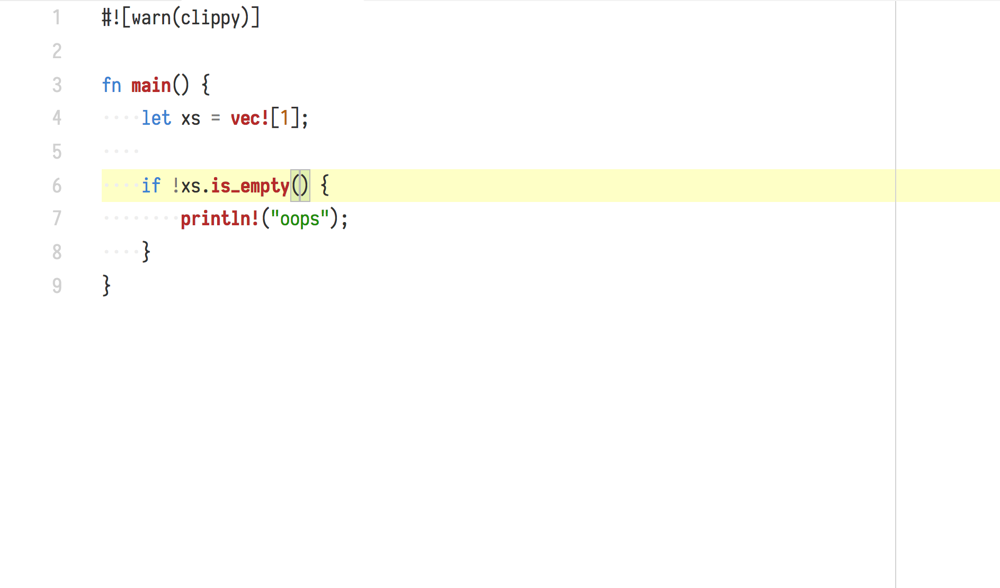
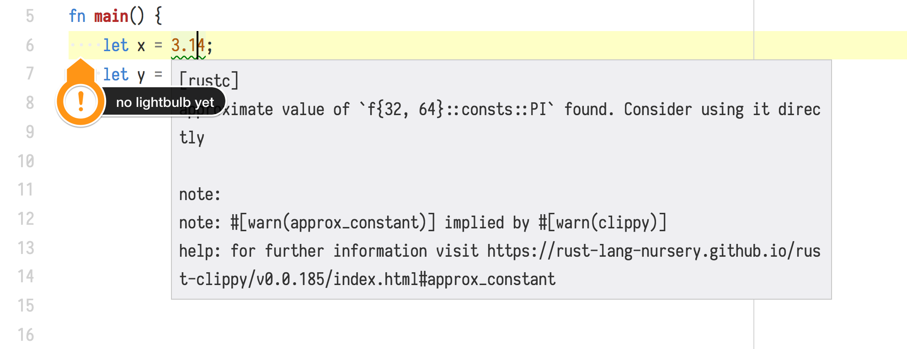

rustfix
…and the journey to getting better code automatically
Pascal Hertleif
2018-02-04
Hi, I’m Pascal Hertleif
- Web dev & Rust freelancer
- Co-organizer of Rust Cologne
- {twitter,github}.com/killercup
- Rust-centric blog: deterministic.space
Rust programmers like compiler errors
error[E0507]: cannot move out of borrowed content
--> src/lib.rs:126:29
|
126 | if let Some(code) = diagnostic.code {
| ---- ^^^^^^^^^^ cannot move out of borrowed content
| |
| hint: to prevent move, use `ref code` or `ref mut code`Why?
Rust is all about compile-time checks
But also: Rust’s errors are pretty and helpful
Warnings, too
- Lints
- Prevent errors
- Examples
- unused
Results orIterators - Missing docs
- unused
Clippy
It looks like you’re enjoying errors. Would you like some more?
- 208 lints written by the community
- Find common bugs
- For example:
if_same_then_else
- For example:
Lints as a teaching tool
iter.filter(|x| x == 0).next()
Did you know about iter.find(|x| x == 0)?
if !m.contains_key(&k) { m.insert(k, v) }
Have you heard the good news about the Entry API?
m.entry(k).or_insert(v);
- Learn new APIs when you are almost using them
- Each clippy lint is documented with examples
Making this interactive
Suggestions
error: this range is empty so this for loop will never run
--> $DIR/for_loop.rs:148:14
|
148 | for i in 10..0 {
| ^^^^^
|
= note: `-D reverse-range-loop` implied by `-D warnings`
help: consider using the following if you are attempting to iterate over this range in reverse
|
148 | for i in (0..10).rev() {
| ^^^^^^^^^^^^^Why fix it yourself?
I’m sold. These suggestions are great. But…
- don’t make me type
- don’t make me wait
- just fix my code already
Presenting: rustfix
It’s already there
No magic! Just:
- Take existing errors
- Parse the compiler output (JSON)
- Apply suggestions (search & replace)
Make it interactive (1)
rustfix as CLI tool is interactive
- for each error (that has a suggestion) it
- shows you the error and the fix(es)
- asks what you want to do
- fixes your code
Make it interactive (2)
You need to manually call the CLI tool
You do that after working on the code
We can do better
Fixes via IDE
RLS
- Rust Language Server exposes warnings and suggestions
- VSCode plugin can already apply fixes


Demo
Laptop didn’t work?
Totally saw that coming.
– Past Me






Deep dive!
How does this work?
- Compiler plugin
- Find nodes and items of interest
- ‘Annotate’ spans of code
- Compiler generates human/JSON output
What is auto-fixable?
- A lot!
- Do we need to make a list?
- Rust PR #47540 adds flag for “approximate suggestions”
- rustfix-like tools will use this in the future
- UPDATE Merged! üéâ
Thanks!
You can contribute lints and suggestions!
Search for “Rust Clippy” or go to https://github.com/rust-lang-nursery/rust-clippy
There are a lot of issues labelled good first issue
You get to call yourself a compiler hacker!
Any questions?
Visit rust-lang.org
Follow me on Twitter: @killercup
Slides available at git.io/fosdem-rustfix